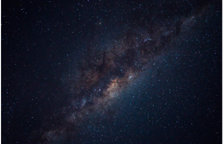
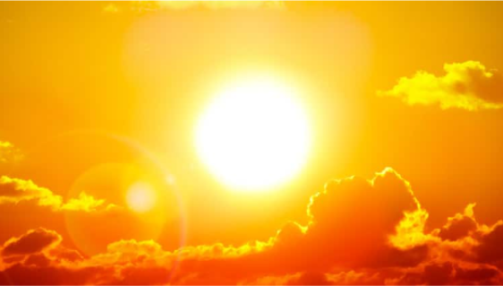

El sistema solar es un conjunto formado por el Sol y los ocho planetas que girar a su alrededor.De los ocho pletas, uno es donde vivimos:la Tierra.
Ademas de estos elementos hay otros cuerpos celestes que también orbitan orbitan alrededor de la gran estrella solar , como los satélites de cada planeta ,los cometas o los asteroides.
En el universo hay millones de galaxias.Una de ellas es la que conocemos como Vía Láctea.
La Vía Láctea ,formada por estrellas,polvo y gas,tiene forma de espiral.Podría decirse que su aspecto es algo así como un remolino con varios brazos; pues bien, en uno de ellos , el llamado brazo de Orión,se encuentra el Sistema Solar.
Lo cierto es que hace tanto tiempo que es muy dificil saber este dato con seguridad, pero se cree que fuehace... ¡4.5 MIL MILLONES DE AÑOS!Si lo piensas bien te darás cuenta de que estamos hblando de un espacio temporal impaciente y que nos resulta dificil de imaginar.
Este es otro tema que todavía no está del todo claro , pero según las últimas investigaciones parece ser que la fortísima explosión de una estrella provocó que una gran nube de gas y polvo se contrajera y empezara a girar a gran velocidad . Por lo visto , la mayor parte de esta materia se concentró en el centro y se fue calentadando cada vez más y más , hasta formar una gran estrella : el Sol.
Después , alrededor del Sol, el resto de polvo y gas fue chocando y juntándose hasta formar los diferentes plentas
El Sol es el gran protagonista de este sistema, que por eso se llama Sistema Solar.Está situado en el centro y todo gira en torno a él.
El Sol es una estrella inmensa que admite luz y calor. Sin el Sol, la vida en la Tierra no existiría.
